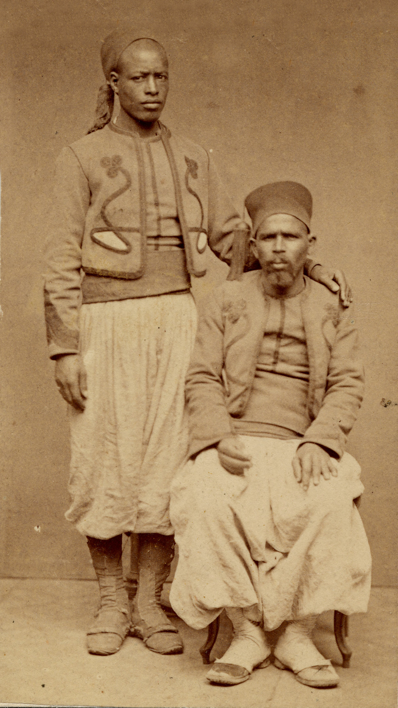

---
# base layout for other item display_template layouts
# adds breadcrumbs and title at top; citation box, rights box, and browse buttons at bottom
layout: default
# item-meta adds rich meta markup to the page on production build
item-meta: false
---
    <main class="case">
        <section id="casedescription">
            <div class="sticky">
                <details>
                    <summary>All Cases</summary>
                    <ul>
                        {% for section in site.data.config-nav.casesnav %}
                        <li>
                            <details>
                                <summary>{{ section.title }}</summary>
                                <ul>
                                    {% for case in section.subfolderitems %}
                                    <a href="{{ case.url }}"><li>{{ case.page }}</li></a>
                                    {% endfor %}
                                </ul>
                            </details>
                        </li>
                        {% endfor %}
                    </ul>
                </details>
            <h2>{{ page.title }}</h2>
            <p>
                {{ content }}
            </p>
            </div>
        </section>
        <section>
            <a href="../item"></a>
            <a href="../item"></a>
            <a href="../item"></a>
        {%- assign items = site.data[site.metadata] | where_exp: 'item','item.objectid' -%}
        {% for item in items %}
            <a href="{{ item.url }}"></a>
        {% endfor %}
        </section>
    </main>
